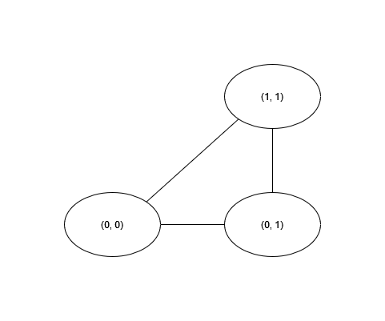

Region#
Regions are nearly identical to Track, with the exception that the last waypoint must connect to the first waypoint.
These enclosed tracks represent continuous segments of space, or in other words, an area.
Using Regions#
Regions are used like so:
Create the Region
Add some Waypoints to the Region
Perform some operations with the Region
Example#
Note
The following example assumes you are familiar with Waypoint.
For example, let’s consider the following route:
We can represent this in GPSUtils using this code:
import gpsutils
region = gpsutils.Region()
waypoint1 = gpsutils.Waypoint(0, 0)
waypoint2 = gpsutils.Waypoint(0, 1)
waypoint3 = gpsutils.Waypoint(1, 1)
region.add_waypoint(waypoint1)
region.add_waypoint(waypoint2)
region.add_waypoint(waypoint3)
Check it#
>>> print(region)
Region(track=[Waypoint(latitude=0, longitude=0, elevation=0, time=2023-06-28 23:05:56.626750, name=, description=), Waypoint(latitude=0, longitude=1, elevation=0, time=2023-06-28 23:05:56.626750, name=, description=), Waypoint(latitude=1, longitude=1, elevation=0, time=2023-06-28 23:05:56.626750, name=, description=)], name=, description=)
>>> print(region.get_edges())
[(Waypoint(latitude=0, longitude=0, elevation=0, time=2023-06-28 23:05:56.626750, name=, description=), Waypoint(latitude=0, longitude=1, elevation=0, time=2023-06-28 23:05:56.626750, name=, description=)), (Waypoint(latitude=0, longitude=1, elevation=0, time=2023-06-28 23:05:56.626750, name=, description=), Waypoint(latitude=1, longitude=1, elevation=0, time=2023-06-28 23:05:56.626750, name=, description=)), (Waypoint(latitude=1, longitude=1, elevation=0, time=2023-06-28 23:05:56.626750, name=, description=), Waypoint(latitude=0, longitude=0, elevation=0, time=2023-06-28 23:05:56.626750, name=, description=))]
Working with Regions#
Without doing anything too fancy, we can answer a few questions about our region:
Which pairs of points are connected? (How do we get from one place to another?)
How long is each edge between each pair of points? (How far is it from one place to another?)
How far is one point from the end (Are we there yet?)
Note
The following sections use the track imported in the Tutorial as if it were a region
# 1. How do we get from one place to another?
edges = region.get_edges()
# 2. How far is it from one place to another? (in metres)
edge_distances = region.edge_distances_m()
# 3. Are we there yet?
# For the sake of example, let's say we're at (46.57650000, 8.89280556)
remaining_distance = region.distance_to_end_m(gpsutils.Waypoint(46.57650000, 8.89280556))
Check it#
# 1. How do we get from one place to another?
>>> print(edges)
[(Waypoint(latitude=46.57608333, longitude=8.89241667, elevation=2376.0, time=2007-10-14 10:09:57+00:00, name=, description=), Waypoint(latitude=46.57619444, longitude=8.89252778, elevation=2375.0, time=2007-10-14 10:10:52+00:00, name=, description=)), (Waypoint(latitude=46.57619444, longitude=8.89252778, elevation=2375.0, time=2007-10-14 10:10:52+00:00, name=, description=), Waypoint(latitude=46.57641667, longitude=8.89266667, elevation=2372.0, time=2007-10-14 10:12:39+00:00, name=, description=)), (Waypoint(latitude=46.57641667, longitude=8.89266667, elevation=2372.0, time=2007-10-14 10:12:39+00:00, name=, description=), Waypoint(latitude=46.5765, longitude=8.89280556, elevation=2373.0, time=2007-10-14 10:13:12+00:00, name=, description=)), (Waypoint(latitude=46.5765, longitude=8.89280556, elevation=2373.0, time=2007-10-14 10:13:12+00:00, name=, description=), Waypoint(latitude=46.57638889, longitude=8.89302778, elevation=2374.0, time=2007-10-14 10:13:20+00:00, name=, description=)), (Waypoint(latitude=46.57638889, longitude=8.89302778, elevation=2374.0, time=2007-10-14 10:13:20+00:00, name=, description=), Waypoint(latitude=46.57652778, longitude=8.89322222, elevation=2375.0, time=2007-10-14 10:13:48+00:00, name=, description=)), (Waypoint(latitude=46.57652778, longitude=8.89322222, elevation=2375.0, time=2007-10-14 10:13:48+00:00, name=, description=), Waypoint(latitude=46.57661111, longitude=8.89344444, elevation=2376.0, time=2007-10-14 10:14:08+00:00, name=, description=))]
# 2. How far is it from one place to another? (in metres)
>>> print(edge_distances)
[14.99223974762043, 26.89468169228881, 14.090906258340778, 21.003272299148577, 21.43328858030647, 19.34812015069195]
# 3. Are we there yet?
>>> print(remaining_distance)
50.370657604293456
Where to go from here?#
Check out the Region API Reference
Try out the Tutorial if you haven’t already!